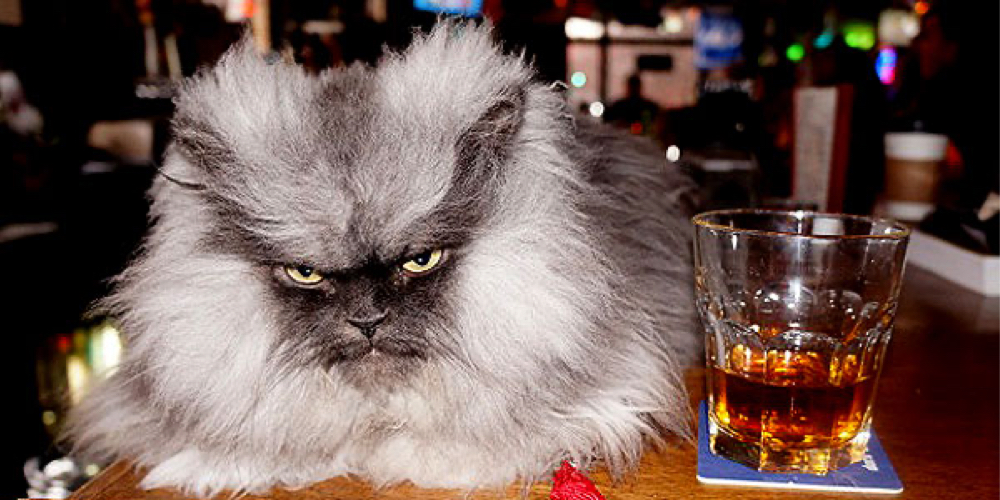

Colonel Meow
Colonel Meow is a Himalayan Persian cat best known for his unique fluffy coat and intense facial expressions. The cat rose to internet fame after being featured on the internet news site The Daily What in September 2012.
Origin Colonel Meow (born October 11th, 2011) was adopted in 2011 by Anne Marie Avey of Seattle, Washington, after he was rescued by a local Himalayan and Persian Society. On August 9th, 2012, Avey set up a Facebook fan page for the cat, posting pictures and videos of Colonel Meow.